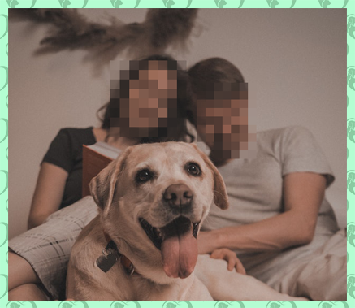

Saying goodbye to a cherished family member is one of the most difficult and universal human trials we experience in cultures around the world. Dogs have been our constant companions throughout human history, and as our civilization has developed and changed over time, so too have our canine companions evolved to coexist with us.
Here at Forever Friend, we believe that if scientific and medical breakthroughs such as gene editing and therapy can benefit us, why not apply these modern miracles to the sweet creatures dearest to our hearts? The only issue is that compared to a human lifespan, our canine soulmates' sparks flare so briefly.
But what if you could ensure that your dog's genetic legacy could live on, with you, for as long as you do?

Enduring Companionship is only One Step Away!What if every goodbye was temporary, every parting was another beginning, and you never again had to grieve for the loss of a precious life?
Imagine waking up every day to see the same soulful eyes greeting you for decades to come...
This dream is a closer reality than you might realize. Forever Friend was founded by dog lovers just like you, who disagreed with the inevitability of mortality. We believe in the possibility of cloning beloved pets, as well as utilizing the most cutting edge genetic science to remake them better.
Your pet will have the same lovable features that captured your heart from the start, and the inborn personality traits that bonded you forever. But congenital disorders, genetic diseases, and other factors that can cut your pet's natural life short need no longer be an issue.
Genesis of Perfection.Though cloning of beloved companions is the jewel atop the Forever Friend crown, it isn't the only service we offer. What if you haven't had the opportunity and good fortune to find the perfect pet for you? Some of us feel that we are searching endlessly for the animal soulmate that perfectly suits our needs and lifestyle.
Utilizing the same ground-breaking technological advancements we use to recreate existing pets again and again, we can create a flawlessly personalized furry compadre for you, according to your specifications, from our own extensive banks of genetic material! And don't stop at the familiar, our innovative industry-pioneering technicians and genetic scientists can bring your fantasies to life.
Ever wanted a cat with the wings and hollow bones of a bird? The sky is the limit! What about a dog with physical alterations that allow it to accompany you on your weekly deep-sea diving trips? The possibilities are as vast and deep as the sea* and we don't believe in stifling the creative imaginations of a true animal lover.